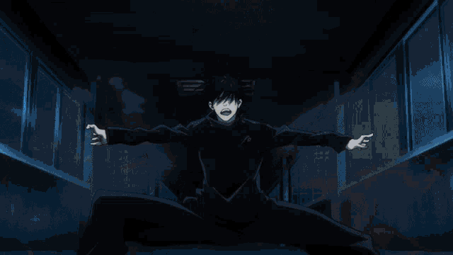

¿Quien es?
Megumi Fushiguro (伏黒恵 Fushiguro Megumi) es uno de los protagonistas de la serie manga Jujutsu Kaisen. Es un estudiante de primer año del Colegio Técnico de Magia Metropolitana de Tokio, y compañero de Yuji Itadori y Nobara Kugisaki.
Su padre es Toji Fushiguro, antiguo miembro del Clan Zenin y hermanastro de Tsumiki Fushiguro. Como miembro de sangre de uno de los tres grandes clanes, nació con el talento innato de hacer uso de la Técnica de Sombras de Diez Tipos, además, dado a un acuerdo concluido entre su padre y Naobito Zenin, si Megumi se ve privado de la custodia de Satoru Gojo, Megumi pasaría a ser la próxima cabeza del Clan Zenin.
Apariencia
|
Vestimenta de Megumi |
Megumi es un joven alto, llegando a medir 1,75 metros. Su cabello es oscuro, y suele llevarlo arreglado y puntiagudo cuando se encuentra en clases o en una misión; lleva su cabello desarreglado, cuando descansa. Gege Akutami describió su cabello como errático. Sus ojos, en el manga son representados de color verde claro, mientras que en el anime, son de color azul oscuro.
Lleva el uniforme estándar del Colegio Técnico de Magia Metropolitana de Tokio, que consiste en una camisa de manga larga y un cuello alto de color oscuro, pantalones y zapatos marrón oscuros; ésta misma vestimenta, en el anime, es representada en color azul marino.
Durante su visita a la Escuela Secundaria Municipal Sugisawa, vistió una camisa blanca, pantalones de vestir negros con zapatos de color claro.
Cuando no está realizando misiones, viste pantalones negros holgados, una remera negra de mangas largas también holgada de cuello amplio y calzado oscuro.
Durante su búsqueda por Kinji Hakari, se lo vio utilizando, una campera de oscura con cuello alto.
Personalidad
|
Personalidad de Megumi |
Megumi suele ser un joven bastante tranquilo, serio y reservado. Nobara Kugisaki se queja de que Megumi nunca dice nada de sí mismo, y de que debería comenzar a decirles más cosas sobre él. A pesar de no mostrar demasiado interés en lo que suelen hacer sus compañeros, siempre se encuentra alrededor de estos y suele acompañarlos a distintos lugares, y no parece mostrar rechazo a la idea de salir de paseo con ellos. Constantemente, se deja llevar por las ideas y bromas de Nobara e Itadori.
Incluso cuando era niño, Megumi era muy severo, serio y reflexivo, hasta el punto en que Satoru cuestionó si realmente estaba en primer grado en el momento en que se conocieron. Cuando Satoru explicó por primera vez la situación con el clan Zenin, Megumi reveló que no se preocupaba por su padre y asumió que él y la madre de Tsumiki habían terminado de cuidarlos. Pudo entender que había sido vendido al clan Zenin, pero solo accedió a ir si Tsumiki también estaría feliz.
Megumi siempre ha estado molesto por la actitud de Satoru desde que se conocieron. No le importaba la idea de convertirse en hechicero y se cansó más con el tiempo. Cuando Megumi llegó a la escuela secundaria, su actitud impersonal se había establecido por completo. Pensó que convertirse en un hechicero jujutsu no tendría sentido ya que no se veía a sí mismo como alguien que salva a los demás. Megumi no estaba interesada en hacer amigos, pero creía que la base de la interacción . Tsumiki quería que dejara de meterse en peleas, pero Megumi no escuchó y la descartó.
Aunque aparenta ser estoico y calculador, Megumi desea ayudar a las personas que considera buenas o amables. Cree que el mundo es injusto y que un chamán es una herramienta para garantizar que las personas amables tengan una oportunidad de vivir. Afirma que eso es un deseo egoísta e irracional, y por ello no se ve como un héroe por hacer esto. Otro lado de su personalidad es que es bastante insensible cuando habla de la muerte de criminales y asesinos, ya que cree que no deberían ser salvados.
En sus días como estudiante de secundaria, la personalidad de Megumi era diferente a la del presente. Mostraba odio a las personas bonachonas porque creía que perdonar a los malos era una ridiculez y al mismo tiempo odiaba a la gente mala por no tener ni una pizca de empatía hacia quienes abusaban constantemente. Era conocido por pelearse con los "matones" de su escuela y de su área ya que pensaba que era su castigo. Sin embargo, cuando Tsumiki quedó postrada por una maldición cambió de personalidad y dice que quiere disculparse con su hermana, considerándose un idiota en esa época.
Habilidades
| Habilidad | Descripción | Imagen |
|---|---|---|
| Lobos de Jade | Permite la invocación de dos lobos gemelos, uno
es blanco mientras que el otro es negro, y ambos
tienen tres puntos en la frente de colores
opuestos. Su función principal es perseguir y
devorar maldiciones. También son útiles para
rastrear olores, pueden advertir de las
maldiciones entrantes o llevarlo a objetivos
específicos.
|
|
| Quimera | Un shikigami con forma de búho que puede volar. Sus usos en combate son bastante variados: es lo suficientemente fuerte como para transportar a un humano, sus habilidades ofensivas son principalmente ataques en picada desde el cielo, también sirve como apoyo, volando alrededor de su presa y atacando cuando se encuentre vulnerable. | |
| Monstruo Serpiente | Una serpiente shikigami de tamaño gigante con una extensa longitud que puede usarse como ataque sorpresa, puesto que también es capaz de ser invocada desde el suelo y puede atar al oponente. Este shikigami ya no puede ser utilizado porque fue destruido por Sukuna. | |
| Sapo | Permite la invocación de un sapo en gran tamaño,
capaz de usar su la extensa longitud de su
lengua para atrapar a los oponentes y
mantenerlos presionados, incluso sí se
encuentran a varios metros de distancia.
También, es capaz de refugiar aliados en su
barriga.
|
|
| Elefante Máximo | Un elefante shikigami que es capaz de liberar una gran cantidad de agua de su trompa. La presión del agua es suficiente para inundar un lugar y provocar destrucción a su alrededor. Megumi solo puede usar su forma base ya que consume mucha energía maldita. Su tamaño también permite aplastar oponentes. | |
| Estampida de Conejos | Se invocan una gran cantidad de conejo shikigami de tamaño normal que sirven como cortina para distraer al enemigo. La distracción puede servir para varios motivos. También son capaces de atacar en manada. | |
| General Divino de las Ochos Hojas Diferentes del Sila: Demonio Mahoraga | Posee una gran fuerza, capaz de destruir cosas a su alrededor sin problemas. Por cada ataque que recibe, Mahoraga se encarga de hacer girar su rueda de ocho hojas para procesar la información recibida, lo que le permitirá volverse fuerte e 'inmune' al ataque ya recibido; su técnica le permite adaptarse a cualquier fenómeno al que se vea expuesto. Es el único shikigami que Megumi no puede utilizar a voluntad. | |
| Expansion Territorial: Jardín Azabache de las Quimeras | El área creada posee una gran cantidad de sombras fluidas. Desde la sombra, Megumi es capaz de invocar múltiples shikigami e incluso crear un doble de sí mismo. También es capaz de esconderse dentro de la sombra de un enemigo y atacar desde su punto ciego, en su batalla en la colonia de Tokyo #1 contra Reggie Star se demostro una debilidad la cual consiste en que el cuerpo de Megumi soportara el peso de todos los objetos que caigan adentro de la sombra que se extiende en el suelo de su Territorio como si los estuviera cargando. |
Imagenes de Megumi
|
Apariencia de Megumi (Anime) |
|
Apariencia de Megumi (Manga) |
|
Megumi preparando su dominio (Manga) |
|

Megumi invocando a sus perros shikigamis |

Megumi invoca a otro de sus shikigamis |
|
Megumi con Gojo |
Curiosidades
- Según información revelada en el Volumen 01 del manga:
- Mide 1.75 metros, siendo un poco más alto que Yuji Itadori, aunque éste último sigue creciendo.
- Le gusta leer libros de no-ficción.
- Conoce a Satoru Gojo desde antes de ingresar al Colegio de Jujutsu.
- Le gusta la comida que combine con el jengibre.
- No le gustan los pimientos rojos.
- Sólo utiliza ropa que considere cómoda.
- Akutami dijo que Megumi tiene el hábito de tocarse el hombro izquierdo.
- Según información revelada en el Jujutsu Kaisen Official
Fanbook:
- Tiene 15 años.
- Su cumpleaños es el 22 de Diciembre.
- Es un chamán de segundo grado.
- Nació en Saitama.
- Su modo de inscripción al Colegio de Tokio fue por su linaje de sangre.
- Su técnica es la Técnica de Sombras de Diez Tipos.
- Su pasatiempo es leer.
- Su comida favorita es cualquier comida que vaya bien con jengibre.
- Su comida menos favorita es el pimentón y toda guarnición dulce.
- Su causa de estrés son los humanos (casi todos).
- No tiene un tipo favorito (todo lo que necesita es alguien que tenga una humanidad inquebrantable).
- Información revelada de la entrevista con Gege Akutami:
- Cuando alguno de sus shikigami es destruido, Megumi suele sobrellevar la pérdida a su manera, él es de las personas que parecen estar más melancólicas cuando muere un animal que cuando muere un extraño.
- Megumi suele interesarse en las relaciones amorosas ajenas, no porque le interesa, sino porque le gusta verificar sus sospechas y saber que siempre tuvo toda la razón.
- Akutami dijo que Megumi rechazaría la confesión de amor de una chica como "Lo sieeeeeeento!!".
- Megumi mira la TV y lee el periódico pero no cree ni en la mitad de lo que ambos dicen.
- La primera misión de Megumi fue asignada por Gojo, según este era una misión adecuada a las habilidades de Megumi en ese entonces, pero al parecer solo se estaba burlando de Megumi.
- Gojo y Maki fueron quienes le enseñaron a Megumi a usar herramientas malditas y a luchar cuerpo a cuerpo.
- Durante sus estudios en Escuela Secundaria Oriental de Urami, el mayor escandalo problemático que tuvo Megumi fue colgar a unos delincuentes de una pancarta, estos no fueron heridos en el proceso.
- Probablemente Megumi haya tenido amigos que murieron que no fueron sus compañeros de clase, esto es dado a que lleva una larga carrera como chamán.
- Cuando su padre y la madre de Tsumiki se fueron, Tsumiki se encargó de los quehaceres del hogar y Megumi la ayudaba, Gojo intervino antes de que el poco dinero dejado por la madre de Tsukimi se agotara, justo en ese momento comenzaron a llegar las facturas de los servicios públicos.
- En el Capítulo 56, cuando ve a una ex-compañera de clase, recordó su nombre de inmediato, pero esto no significa que Megumi interactuara mucho con sus ex-compañeros de clase, sino que simplemente tiene muy buena memoria.
- Megumi se volvió una persona muy perspicaz dado a que tiene una visión muy negativa del mundo, y no le tiene mucha fe o confianza a las personas.
- Megumi no respeta a Toge ya que es propenso a unirse a las payasadas de Panda y Gojo.
- Megumi probablemente nunca tuvo la experiencia de reír tanto hasta el punto de llorar.
- Antes de ingresar al Colegio Técnico de Magia Metropolitana de Tokio, Megumi nunca fue llamado para alguna misión, toda su experiencia previa la adquirió dado que Gojo, quien es su tutor, lo llevaba a menudo a sus misiones.
- Conoció por primera vez a Mai y a Maki cuando fue con Gojo a la casa del Clan Zenin para lidiar con ellos.
- No hay ninguna razón especial por la que no le gusten los pimientos, simplemente no le gusta los platos dulces.
- El alma de Megumi fue sellada en su propio cuerpo por Sukuna Ryomen con el método de baño.